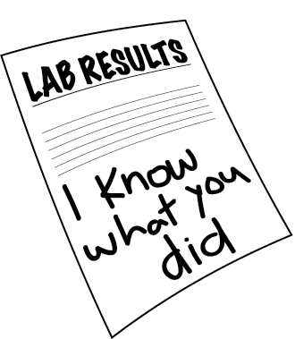
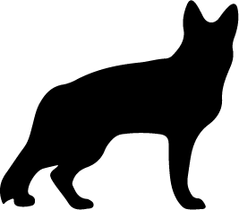
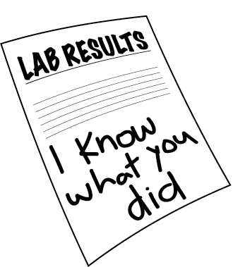
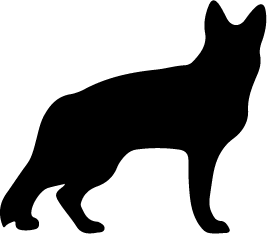

About the Director
Rian Johnson wrote and directed “Knives Out,” released in 2019 to critical and financial success. The film earned Johnson his first Academy Award nomination for Best Original Screenplay. In February 2020, Lionsgate stated that they were moving ahead with a sequel to “Knives Out,” but on March 31, 2021, it was announced that Netflix had inked a $469M deal for two sequels instead. Daniel Craig would reprise his role as Benoit Blanc and each sequel would have a budget equal or greater than the 2019 movie (about $40M).
Prior to Knives Out, Johnson wrote and directed the “Star Wars: The Last Jedi.” In 2017, it was announced that Johnson would write a new Star Wars trilogy. This new trilogy would be separate from the main story arc of the previous films in the franchise. Johnson would direct the first installment of the trilogy.